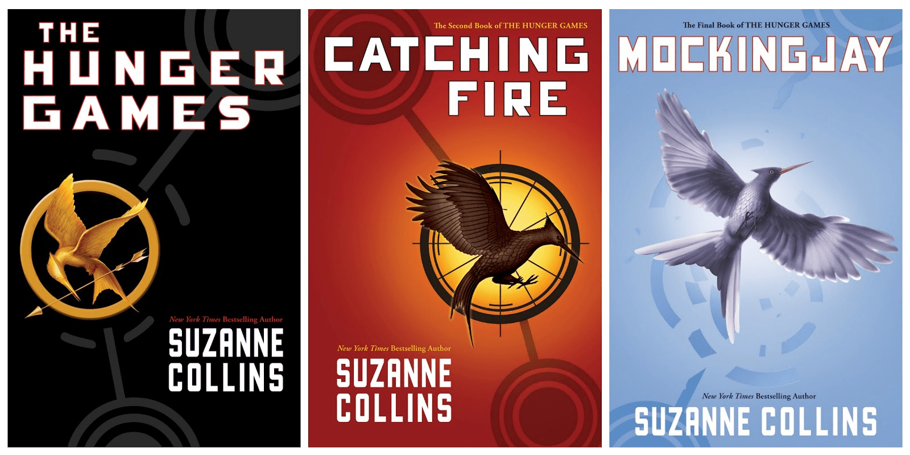

HTML Validated
HTML ValidatedThis website will give you information on everything related to The Hunger Games including information on both the books and the movies.
The Hunger Games is a series of young adult dystopian novels written by American novelist Suzanne Collins. The names of these books consist of The Hunger Games (Released in 2008), Catching Fire (Released in 2009), and Mocking Jay (Released in 2010).
These books were adapted into movies by Lionsgate Film, the Hunger Games (released in 2012), Catching Fire (released in 2013), Mockingjay Part 1 (released in 2014), and Mockingjay Part 2 (released in 2015).
The Three Finger Salute is used by District 12 residents when they have to say thanks or just to show that the person is loved and respected by them. It's a gesture of admiration, gratitude and saying goodbye to someone you love.
The sign is made by pressing your three middle fingers of your left hand to your lips and then hold them out to the person, or people, that you want to show respect to. In the books, the left hand is used, but in the first film it is the right hand, and the fingers are simply held up by their side. After holding out your hand you would whistle 4 notes: G, Bb, A, and D. This is because the four notes were Rue's signal for Katniss. After Rue died, Katniss directly faced the cameras, performed the three finger salute and whistled Rue's Song in honour of her.
The most famous quote from the Hunger Games is a quote from Effie Trinket when she reaps the tributes from District 12. The quote is "And may the odds be ever in your favour."
When Katniss was younger, her father would take her to the woods with him and teach her how to hunt. When they were in the woods, Katniss' father taught her the song "The Hanging Tree". Jennifer Lawrence actually recorded a soundtrack of "The Hanging Tree" for the movies.
This website,The Hunger Games Fandom has lots of additional information about the Hunger Games.